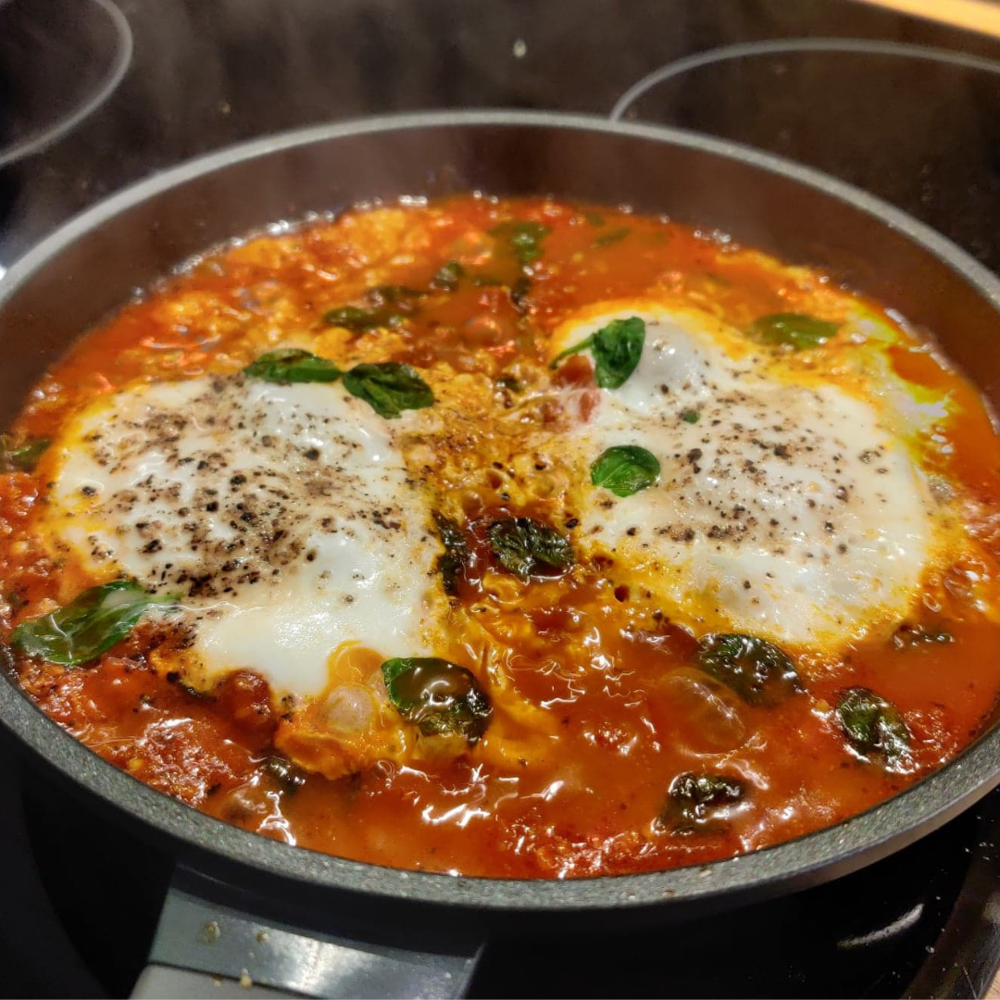

Szakszuka
Szakszuka jest idealnym wyborem na weekendowe śniadanie. Jest bardzo sycąca a podana ze świeżym chlebem sprawia,że dzień zaczyna się idealnie.
Składniki
- dwa pomidory malinowe
- papryka
- szalotka
- dwa jajka
- sól
- pieprz
- kumin
- kolendra
- oliwa
Przygotowanie
- Posiekaj szalotkę, pomidory i paprykę pokrój w kostę.
- Rozgrzej na patelni oliwę z oliwek.
- Podsmaż cebulkę aż się zeszkli a następnie dodaj pokrojoną paprykę i pomidoty oraz przyprawy. Podduś chwilę na patelni a następnie wbij jajka i przykryj patelnię pokrywką. Jak zauważysz że jajko się ścięło, szakszuka jest gotowa.
- Najlpiej jest podawać ze świeżym pieczywem i skropione odrobiną soku z limonki.